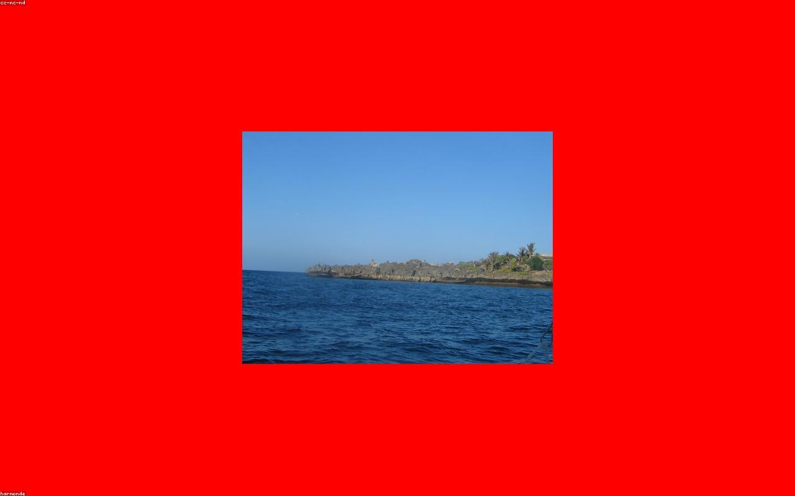

Featured · Beaches
10 Hidden Beaches in Terengganu You Have Never Heard Of
Beyond the postcard fame of Redang and Perhentian lies a quieter coast, sleepy fishing kampungs, untouched coves and water so clear you can count the fish from the jetty. We spent two weeks tracing the Terengganu shoreline to find the beaches the brochures forget.
From the wind-swept sands of Pantai Batu Burok at dawn to the secret lagoons near Setiu Wetlands, this is your map to the east coast's best-kept secrets, plus exactly how to reach each one and when to go.
Read the Full Story